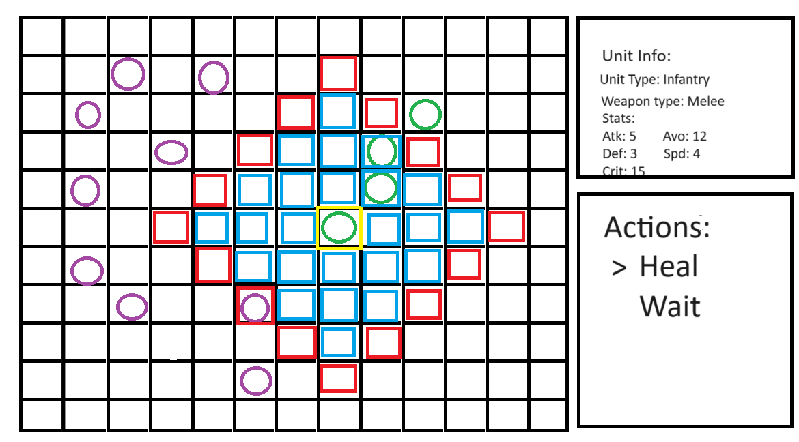
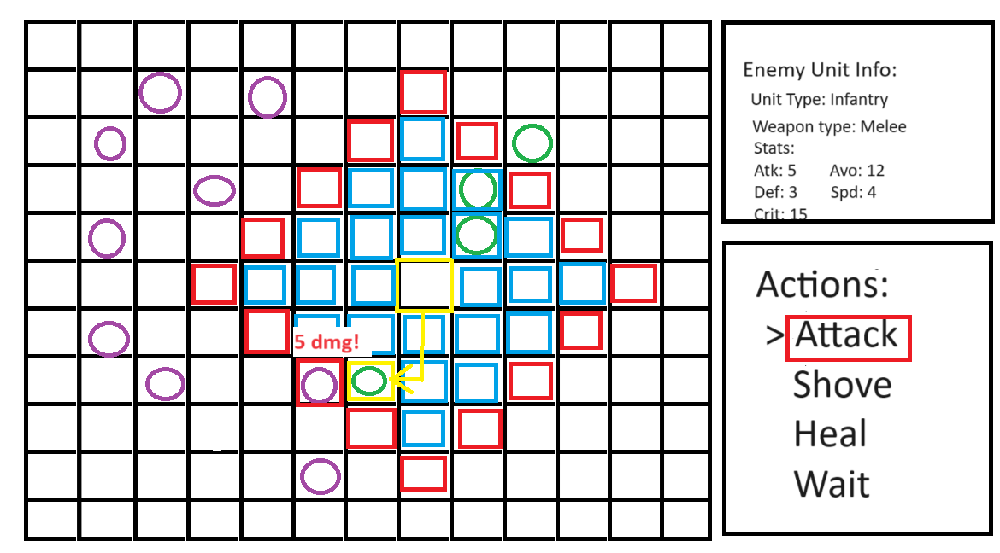

Little Armys
I. High Concept
A small grid based tactical strategy game where the player controls units and aim to defeat an enemy army.
II. Genre
- Tactical Strategy
- Turn-Based
- Top-Down
- Puzzle
III. Platform
Desktop only (mobile if time permits)
IV. Story
Particular story, simply puzzle solving.
V. Esthetics
Pixel art units and terrain. Varied randomly generated terrain.
VI. Gameplay
On the player's turn they will be able to move all their units based on their movement speed, choose to attack the enemies if they are in range. The game is grid based so the unit range, movement, and terrain are all restricted to the grid. Battles are based on the unit's stats such as attack, defense, critical chance, avoidance, speed, etc. The turn player's units always attack first. The enemy units are controlled by AI but are able to do all the same actions.
Mechanics
- Units may have unique actions such as healing, or pushing other units.
- Terrain may have unique properties such as lowering movement speed, preventing certain units from moving, etc.
- Units may also have unique attributes such as being able to move through difficult terrain or attack from a distance.
Control
On desktop you will use the mouse to click units which will mark the unit as selected. This will bring up a menu of actions which you can use the mouse to click an option from. While a unit is selected tiles will be highlighted that the unit can move to as well as tiles that the unit can attack.. Clicking a highlighted tile will move the unit to that tile.
Teaching the game/New user experience aka "Onboarding"
I would like to implement a tutorial where there is text on the top or bottom of the screen that explains the basic controls when the player first starts playing. It would explain the controls as the player completes actions that open up more options for the player.
Player learning
Important things for the player to learn are how the stats effect battles, and the basic controls. The basic controls will be explained at the start of the game via tutorial text. I believe that everything else about the game, (i.e. stats, unique options, terrain, movement and range types), should be discovered by the player via trial and error. This gives the player a greater sense of learning and progression as well as better cements the information in the player's mind rather than an info dump at the start of the game.
VII. Screenshots
 VIII. About the developer(s)
Joshua Leong, Game Design and Development sophmore at RIT.
Skills: C#, Python, Java, HTML, CSS, JavaScript, GitHub, Axure, Game Maker Studio 2, Unity, Maya Autodesk 2024, Adobe Photoshop, Gimp, DaVinci Resolve, Game Design, Music Composition
Interests: Game Design, Music Composition and Production, Martial Arts, Card Games, Tabletop Games.